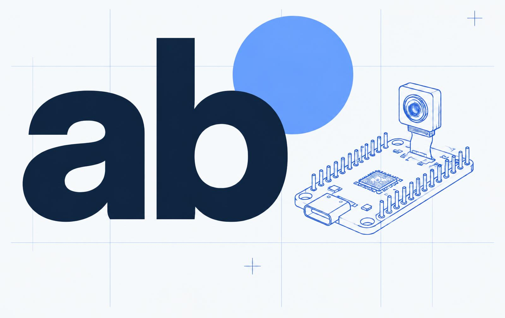

01 · Tecnologia ★ Em destaqueProjeto acadêmico
Readapt.
Tecnologia educacional para crianças de 6 a 10 anos com dificuldades de leitura e escrita ligadas à dislexia — plataforma digital, atividades educativas e um protótipo físico com ESP32.
- 01Software
- 02Conteúdo
- 03Hardware
Ver projeto completo
GitHub